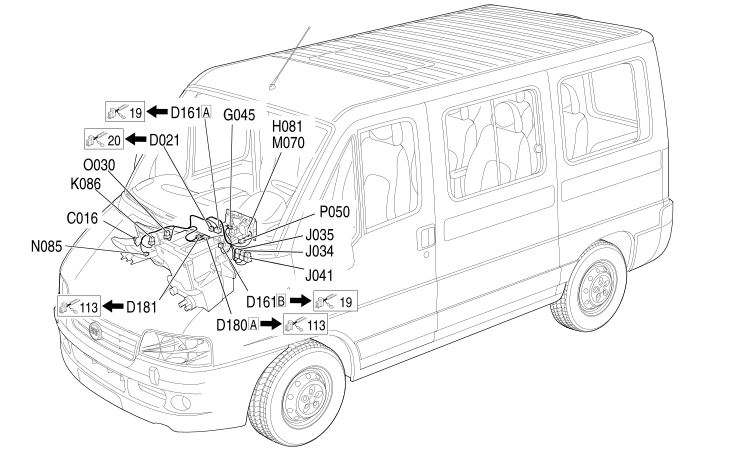

65 AIR CONDITIONING
- Path
- Electrical equipment > 2 WIRING > 65 AIR CONDITIONING
- Kind
- wiring harness
- Applies to
- all engines; all production periods
- Interactive page
- https://sloeber94.github.io/elrnDB-fDct/en/#/244002288
Applies to: all engines; all production periods

Topics that link to this page (30)
- C016 AIR CONDITIONING UNIT EARTH (AIR CONDITIONING)
- C016 AIR CONDITIONING UNIT EARTH (AIR CONDITIONING)
- D021 DASHBOARD/AIR CONDITIONING-HEATER COUPLING (AIR CONDITIONING)
- D021 DASHBOARD/AIR CONDITIONING-HEATER COUPLING (AIR CONDITIONING)
- D161A OPTIONAL DASHBOARD/AIR CONDITIONING COUPLING (AIR CONDITIONING)
- D161A OPTIONAL DASHBOARD/AIR CONDITIONING COUPLING (AIR CONDITIONING)
- D161B OPTIONAL DASHBOARD/AIR CONDITIONING COUPLING (AIR CONDITIONING)
- D180A AIR CONDITIONING/ADDITIONAL AIR CONDITIONING COUPLING (AIR CONDITIONING)
- D180A AIR CONDITIONING/ADDITIONAL AIR CONDITIONING COUPLING (AIR CONDITIONING)
- D181 HEATER/ADDITIONAL HEATER COUPLING (AIR CONDITIONING)
- D181 HEATER/ADDITIONAL HEATER COUPLING (AIR CONDITIONING)
- G045 AIR CONDITIONING/HEATER CONTROLS LIGHT (AIR CONDITIONING)
- G045 AIR CONDITIONING/HEATER CONTROLS LIGHT (AIR CONDITIONING)
- H081 CLIMATE CONTROL FAN CONTROL (AIR CONDITIONING)
- H081 CLIMATE CONTROL FAN CONTROL (AIR CONDITIONING)
- J022 PASSENGER'S COMPART. AIR ELECTRIC FAN REMOTE CONTROL SWITCH (AIR CONDITIONING)
- J034 PASSENGER COMPARTMENT AIR FAN SPEED RELAY 1 (AIR CONDITIONING)
- J034 PASSENGER COMPARTMENT AIR FAN SPEED RELAY 1 (AIR CONDITIONING)
- J035 PASSENGER COMPARTMENT AIR FAN RELAY (AIR CONDITIONING)
- J041 PASSENGER COMPARTMENT AIR FAN MAXIMUM SPEED RELAY (AIR CONDITIONING)
- J041 PASSENGER COMPARTMENT AIR FAN MAXIMUM SPEED RELAY (AIR CONDITIONING)
- K086 FROST SENSOR (AIR CONDITIONING)
- K086 FROST SENSOR (AIR CONDITIONING)
- M070 CLIMATE CONTROL SYSTEM CONTROL UNIT (AIR CONDITIONING)
- M070 CLIMATE CONTROL SYSTEM CONTROL UNIT (AIR CONDITIONING)
- N085 PASSENGER COMPARTMENT AIR FAN (AIR CONDITIONING)
- N085 PASSENGER COMPARTMENT AIR FAN (AIR CONDITIONING)
- O030 PASSENGER COMPARTMENT AIR FAN ADJUSTMENT RESISTOR (AIR CONDITIONING)
- P050 CIGAR LIGHTER / CURRENT SOCKET (AIR CONDITIONING)
- P050 CIGAR LIGHTER / CURRENT SOCKET (AIR CONDITIONING)